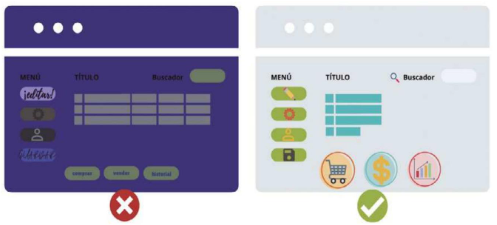
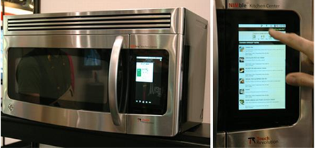
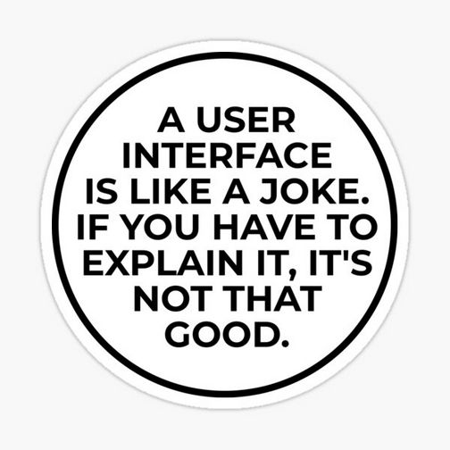
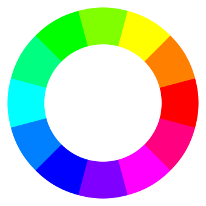
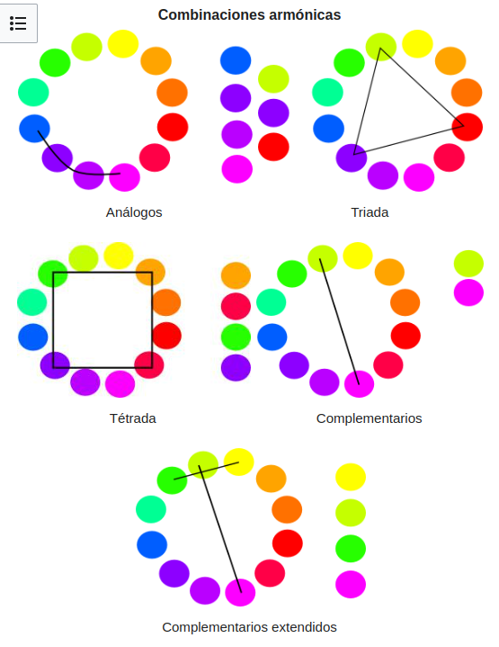

0.3 Introducción a la interfaz de usuario¶
El diseño de una interfaz. El diseño gráfico¶
Una interfaz es el medio por el cual dos sistemas se comunican entre sí. En el caso de las interfaces de usuario, se trata de la comunicación entre el usuario y la computadora.
El diseño de interfaces de usuario busca poner los puntos de contacto entre un usuario y una computadora, es decir, la forma en la que un usuario interactúa con una aplicación informática o un dispositivo electrónico.
Generalmente es la forma en la cual se conectan el hardware con el software, que comprende las aplicaciones, programas y herramientas, su finalidad es que un usuario pueda realizar una acción determinada en la forma que se desea, teniendo eficacia, rendimiento y seguridad en cada proceso, lo que involucra que las acciones que se realicen sean las que el usuario desea de forma eficaz y precisa.
- La acción efectuada debería ser la que el usuario tiene intenciones de hacer.
- La acción se debe realizar de forma eficaz y precisa.
- La acción debe afectar solamente al componente de hardware o a la aplicación que se tenía considerada utilizar, esto sin afectar a otros componentes.
En el caso de las interfaces gráficas de usuario, en inglés GUI (Graphical User Interface), se busca que el usuario pueda interactuar con la computadora de forma visual, a través de elementos gráficos como ventanas, botones, menús, etc.
Así, podemos definir el diseño gráfico como la disciplina que se encarga de proyectar y diseñar soluciones visuales para comunicar mensajes específicos a un público determinado. En el caso de las interfaces de usuario, el diseño gráfico busca que el usuario pueda interactuar con la computadora de forma visual.
Por lo tanto, la interfaz gráfica de usuario será un conjunto de elementos y un diseño donde su distribución que permite una mejor presentación y navegación en la aplicación. Si no existen ambos factores unidos, el resultado final no será óptimo, pudiendo tirar por tierra todo el buen trabajo que lleva en el backend. Ejemplo:

Como se puede apreciar, la figura, las dos imágenes son la misma aplicación. En la izquierda tenemos un mal diseño, ya que los los elementos no aparecen diferenciados, no se puede leer bien el texto, no se aprecian correctamente las imágenes, etc. Mientras que en la imagen de la derecha, la navegación del usuario es mucho más intuitiva, proporcionando un mayor grado de satisfacción al usarla.
¿Qué busca la interfaz de usuario?¶
Para responder a esta pregunta debemos recordar la siguiente figura, la cual muestra la relación que existe entre los diferentes elementos que intervienen en un equipo:
flowchart
A("<font color=black> Usuario") --> B("<font color=black> Interfaz Aplicación")
style A fill:#fea,stroke:#888
style B fill:#cfa,stroke:#888
B --> A
B --> C("<font color=black> Interfaz Sistema Operativo")
style C fill:#fdd,stroke:#888
C --> B
C --> D("<font color=black> Hardware")
style D fill:#aef,stroke:#888
D --> C
C --> ACon ello, podemos entender que la interfaz de usuario busca establecer una relación entre el usuario que utiliza la aplicación y el hardware del equipo mediante el uso del Sistema Operativo y la aplicación que se está utilizando.
Las interfaces de usuario son muchas y variadas, tantas como hardware que debemos utilizar, como por ejemplo la siguiente imagen:

Planteamiento y diseño de una interfaz¶

En la construcción de una aplicación debemos tener en cuenta diferentes fases, desde la definición de los objetivos que persigue nuestro proyecto hasta el diseño visual definitivo, pasando por las especificaciones funcionales.
- Definición de objetivos: en esta fase se establecen los objetivos que se persiguen con la aplicación, así como las necesidades de los usuarios a los que va dirigida.
- Especificaciones funcionales: en esta fase se definen las funcionalidades que debe tener la aplicación, así como los requisitos técnicos necesarios para su desarrollo.
- Diseño de la interacción: en esta fase se establece la forma en que los usuarios interactuarán con la aplicación, definiendo los flujos de navegación y las acciones que podrán realizar.
- Diseño de la interfaz: en esta fase se establece el diseño visual de la aplicación, definiendo la estructura de la interfaz, los elementos que la componen y su disposición en pantalla.
- Desarrollo de la aplicación: en esta fase se lleva a cabo la implementación de la aplicación, siguiendo las especificaciones funcionales y el diseño de la interfaz previamente establecidos.
- Pruebas y validación: en esta fase se realizan pruebas para comprobar que la aplicación funciona correctamente y se valida con los usuarios finales para asegurar que cumple con sus necesidades y expectativas.
Elementos de una interfaz gráfica de usuario (GUI)¶
Podemos observar la evolución de las GUI ha llegado a ofrecer a los usuarios unas interfaces con una usabilidad óptima. Para conseguir esto se ha establecido que las interfaces tienen que cumplir una serie de características que, entre otras, serán:
- Consistencia: seguir un mismo diseño y estructura entre ellas y también con otras interfaces de aplicaciones análogas. También tendrán que ser consistente cuando se ejecuten en diferentes entornos.
- Usabilidad: debe ser fácil de usar y de entender (intuitiva), y tiene que ser eficiente en su uso.
- Accesible: debe que mostrar con claridad las funcionalidades que ofrece y tiene que facilitar llegar de manera sencilla y clara.
- Aprendizaje y uso fácil: las interfaces tienen que ser fáciles de usar y también de aprender por parte de los usuarios más noveles.
- Retroalimentación: la interfaz tiene que ofrecer información al usuario sobre las acciones que ha realizado, si estas han sido correctas o no, y si no lo han sido, tiene que ofrecer una solución para corregirlo.
- Anticipación: se tendrán que prever los posibles errores que pueda cometer un usuario o las necesidades que pueda demostrar y ofrecer soluciones antes de que aparezcan o controlándoos y ofreciendo soluciones.
- Autonomía: un usuario no tiene que necesitar más información o ayuda que la que una interfaz le ofrece o, la que puede encontrar a partir de las indicaciones que le indicará esta interfaz.
- Reducir carga de memoria: para poder usar una interfaz más de una vez no habrá que obligar a los usuarios a recordar la ubicación de las funcionalidades, sino que estas tendrán que ser sencillas de reconocer. Esto hará que no sea indispensable memorizar muchas informaciones para aprender a usar una interfaz determinada.
- Internacionalización de la interfaz: según los requisitos, debe que permitir ser entendida y utilizable por usuarios de diferentes culturas e idiomas o bien haciéndola internacional con iconos fácilmente reconocibles o con la posibilidad de seleccionar el idioma con el cual se querrá trabajar.
- Valores iniciales: también conocidos como valores por defecto o estándar. Son los valores que en las interfaces que llevan un formulario incorporado aparecerán seleccionados inicialmente. Además, tienen que poder ser descartados de manera sencilla.
Las interfaces gráficas de usuario disponen de una serie de elementos propios, comunes a muchas de las GUI desarrolladas, que dispondrán de unas características y propiedades. Con estos elementos se facilitará el desarrollo de las GUI de las aplicaciones informáticas, cosa que ofrece la posibilidad de cumplir la mayoría de las características definidas.
Para que el usuario pueda usar estos elementos, tendrá que usar alguno de los dispositivos de entrada/salida. El teclado del ordenador ha sido el dispositivo indispensable, como también lo es el ratón. Pero hay otros como touchpads, tabletas gráficas, gamepads, pantallas táctiles o micrófonos. Por otra parte, en cuanto a dispositivos de salida, además de la pantalla, serán importantes los altavoces, impresoras, leds indicadores, etc.
Algunos de estos dispositivos serán indispensables para el funcionamiento correcto de algunos de los elementos que ofrecen las GUI. Cada interfaz gráfica usará algunos elementos en función de su entorno de trabajo, y no todas tienen los mismos elementos.
Algunos de los elementos de las GUI que se pueden encontrar de manera habitual en muchas interfaces son:
- Botones
- Campos de texto
- Listas desplegables
- Menús
- Barras de herramientas
- Barras de estado
- Ventanas
- Paneles
- Pestañas
- Iconos
- Etiquetas
- Cuadros de diálogo
- Barras de desplazamiento
- Barras de progreso
- Cuadros de texto
Tipos de interfaces gráficas¶
-
Command Line Interfaces (CLI)
Fueron las primeras interfaces, era solo una línea de comandos, un prompt y un cursor parpadeante para mostrar la posición actual o un mensaje, un ejemplo en el caso de los primeros ordenadores personales con MS-DOS.
Con una interfaz de líneas de comandos o Command Line Interface (CLI), se tecleaban comandos específicos para establecer la comunicación con la computadora, el resultado se mostraba en formato de texto.
-
Text User Interface (TUI)
En ellas la interacción con el dispositivo también se da por medio del teclado. Las TUI marcan el paso de las interfaces de líneas de comando a interfaces gráficas de usuario.
-
Graphical User Interfaces (GUI)
Este software se aplica con elementos gráficos de control e imágenes que se toman como referencia de objetos de la realidad.
En este sentido, se suele recurrir al ratón y al teclado como dispositivos de control, aunque también ya es muy común que entren pantallas táctiles.Aquí los iconos también se introducen en el mundo digital, al igual que el escritorio o la papelera.
-
Voice User Interface (VUI)
La Voice User Interface también permite la interacción con las computadoras por medio del control por voz, un ejemplo es Apple con Siri, Amazon con Alexa, Microsoft con Cortana o la búsqueda de Google mediante voz.
De esta forma, se puede acceder a algunas aplicaciones de un modo más efectivo y garantizando una mayor accesibilidad.
-
Natural User Interface (NUI)
Con Natural User Interface, la comunicación con el dispositivo se da de forma más intuitiva, puede ser considerada como una evolución de la interfaz gráfica de usuario y de la Voice User Interface.
Los diferentes sensores, cámaras y micrófonos permiten una comunicación versátil, la interfaz de usuario interactiva reacciona a los gestos, a los movimientos y al lenguaje, siendo capaz de reconocer rostros y objetos.
El color¶
El ojo humano solo es capaz de percibir los denominados colores aditivos; a través de la combinación de éstos es posible obtener el resto de los colores, estos son:
- Rojo (R - Red)
- Verde (G - Green)
- Azul (B - Blue)
El sistema RGB¶
De la misma forma, un ordenador es capaz de obtener la representación de todos los colores utilizando el sistema RGB (Red Green Blue), indicando la proporción de cada color dentro de dicha combinación, dando lugar a toda la paleta de colores.
Para representar cada color de forma que pueda ser traducido por el ordenador se suelen utilizar 8 bits para codificar cada uno de los colores aditivos, es decir, se establece la proporción de cada color que va a formar parte de los tres. La escala monocromática de un color tendrá 256 valores posibles, desde 0 hasta 255.
A la hora de representar cada uno de los colores, es posible utilizar tanto el sistema hexadecimal, donde se representan los valores de cada color en una escala de 00 a FF (0 a 255 en decimal).
El número de combinación de colores se calcula multiplicando el número máximo de grados en la escala monocromática de cada color: 256x256x256, obteniendo 16.777.256 colores.
Por ejemplo, el color amarillo estaría formado por:

| Color | Valor decimal | Valor binario | Valor hexadecimal |
|---|---|---|---|
| Rojo | 255 | 1111 1111 | FF |
| Verde | 255 | 1111 1111 | FF |
| Azul | 0 | 0000 0000 | 00 |
En hexadecimal quedaría expresado: #FFFF00
Matiz, saturación y brillo (HSV)¶
Además del grado en la escala monocromática de cada uno de los colores RGB, los colores representan 3 propiedades que permiten distinguirse unos de otros:

- Matiz (Hue). Atributo que permite distinguir un color de otro. Los tres matices primarios son los colores aditivos, verde, rojo y azul. El resto de los colores se obtiene mezclando estos tres. El matiz permite definir dos colores como complementarios cuando están uno frente al otro en el círculo cromático.
- Saturación (Saturation). Este atributo define la intensidad de un color. Pueden relacionarse con el ancho de banda de luz que estamos visualizando, por tanto, queda condicionado por el nivel de gris presente en un color: cuando mayor sea el nivel de gris, menos saturado será un color, y será menos intenso.
- Valor o Brillo (Value, Brightness). Atributo que define la cantidad de luz de un color. Representa lo oscuro (si se le añade negro) o claro (si se le añade blanco) que es un color respecto de su patrón, es decir, respecto del color puro sin modificar el brillo. En una composición de colores en diseño gráfico, cuanto más brillante sea un color, más cerca parece estar.
Estas propiedades nos permiten definir los colores como cromáticos, complementarios o cercanos, así como definir el contraste de color.
Círculo cromático¶

El término "círculo cromático" se refiere a una representación circular de los colores organizados según su relación cromática. Es una herramienta utilizada en diseño y arte para comprender las relaciones entre colores y crear esquemas de color armoniosos.
Armonía de color¶
La armonía de color se refiere a la disposición de colores de manera que resulten agradables a la vista y transmitan una sensación de equilibrio y orden. En diseño y arte, se utilizan diferentes combinaciones de colores para lograr armonía, tales como:
- Colores complementarios: Colores opuestos en el círculo cromático que, cuando se usan juntos, crean un contraste fuerte y vibrante.
- Colores análogos: Colores que están uno al lado del otro en el círculo cromático y que combinan bien entre sí, proporcionando una transición suave y coherente.
- Colores triádicos: Tres colores equidistantes en el círculo cromático que forman un triángulo equilátero, proporcionando un equilibrio de colores.
- Colores monocromáticos: Variaciones de un solo color, utilizando diferentes tonos, matices y saturaciones para crear una paleta cohesiva y equilibrada.

La armonía de color es esencial en el diseño de interfaces, ya que influye en la percepción y experiencia del usuario. Un esquema de color bien equilibrado y armonioso puede mejorar la legibilidad, la usabilidad y la estética de una interfaz.
Contraste de color¶
El contraste de color se refiere a la diferencia entre dos colores en términos de luminosidad y saturación. Un alto contraste entre colores crea una distinción clara y facilita la legibilidad y visibilidad de la información en una interfaz.
El contraste de color es importante en el diseño de interfaces para garantizar que el contenido sea accesible y fácil de leer para todos los usuarios, incluidos aquellos con discapacidades visuales. Se pueden utilizar herramientas de contraste de color para evaluar y ajustar el contraste de color en una interfaz.
Psicología del color¶
Según la psicología del color, cada uno evoca una emoción o una acción, por lo tanto, a la hora de diseñar una interfaz es recomendable elegir unos colores acordes.
Por ejemplo:
- Rojo: Peligro, Lujuria, Poder, Emoción, Amor, Velocidad, Ira
- Amarillo: Advertencia, Competencia, Felicidad, Barato, Baja calidad
- Verde: Buen Gusto, Envidia, Ecológico, Salud, Dinero
- Azul: Sofisticación, Competencia, Alta calidad, Corporativo, Fiabilidad
- Rosa: Autoridad, Sinceridad, Femenino y Coqueto
- Violeta/Morado: Calidez, Sofisticación, Poder
- Naranja: Robustez, Emoción, Atracción, Peligro
- Marrón: Dolor, Tierra, Estabilidad
- Negro: Felicidad, Sofisticación, Caro, Miedo
- Blanco: Pureza, Limpieza, Espacio
Referencias¶
- García-Miguel, D; García-Miguel, B; Fernández, A. Diseño de interfaces. Editorial síntesi. 2021
- Disseny d’interficies al IOC.